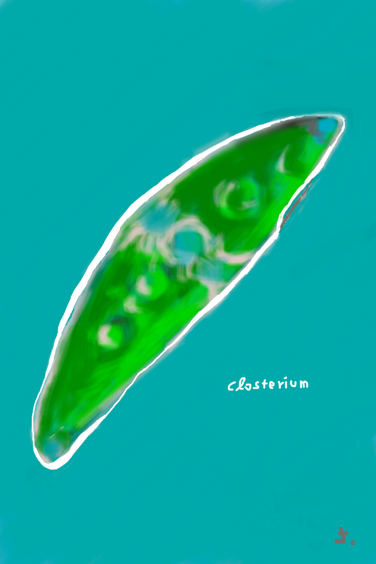
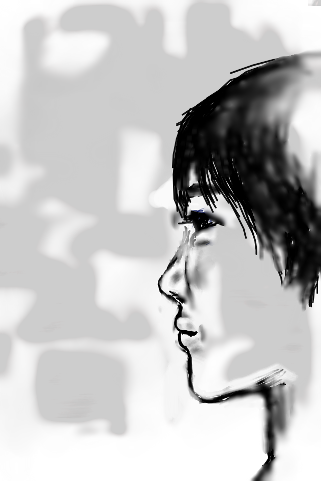
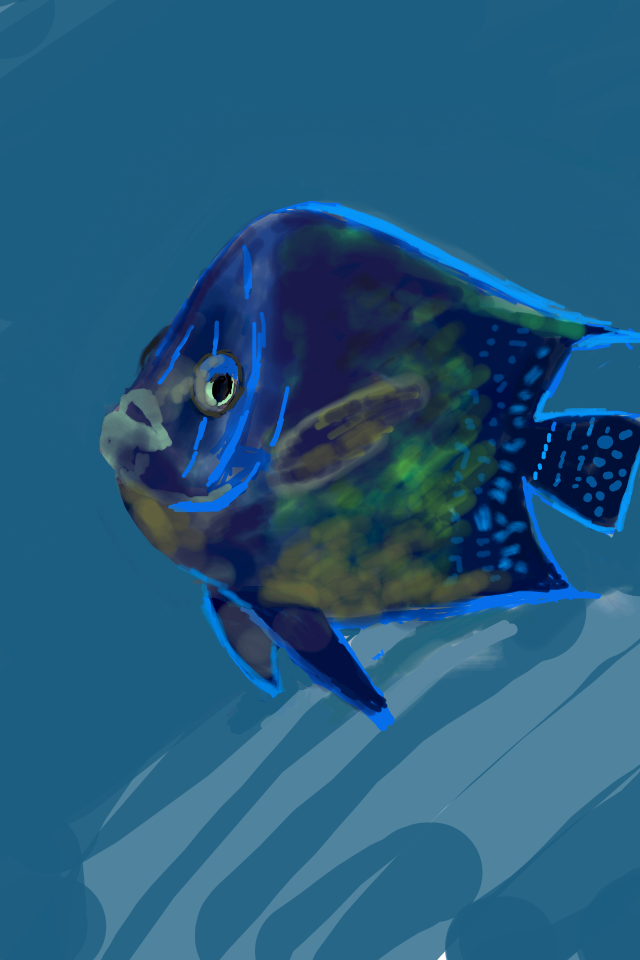
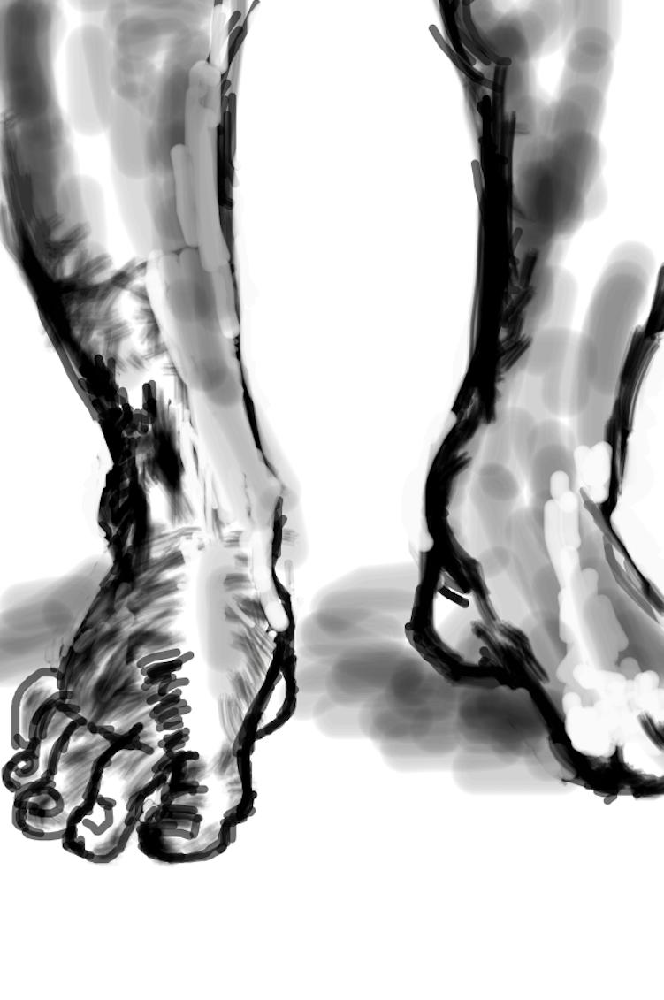
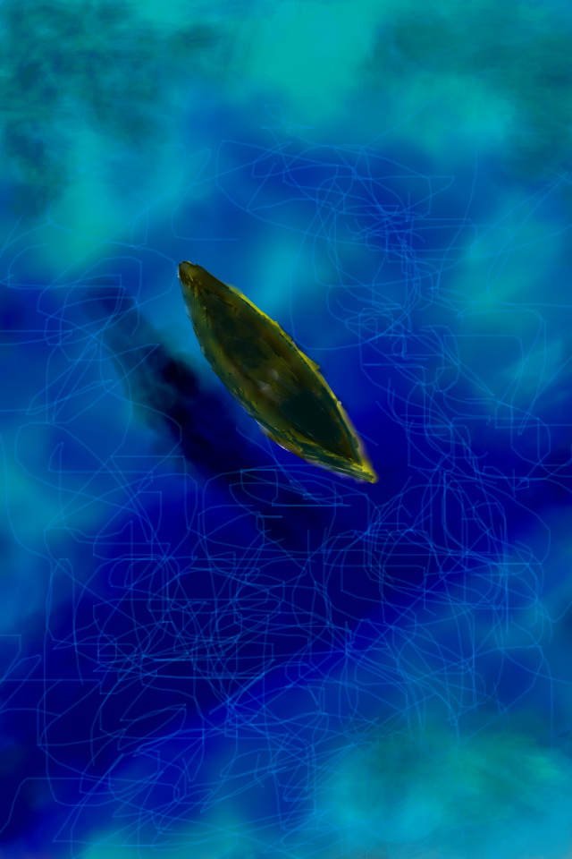
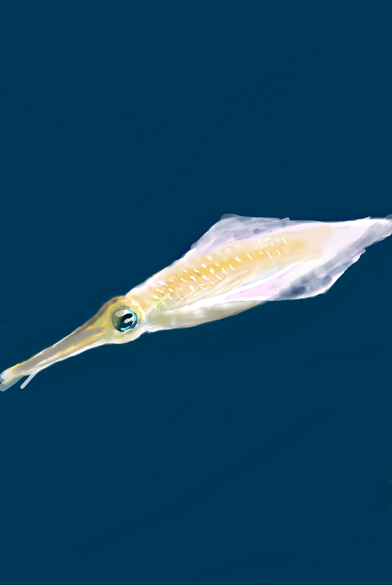
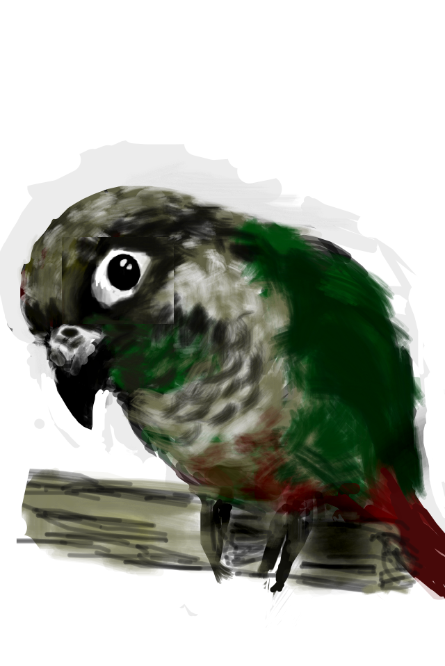
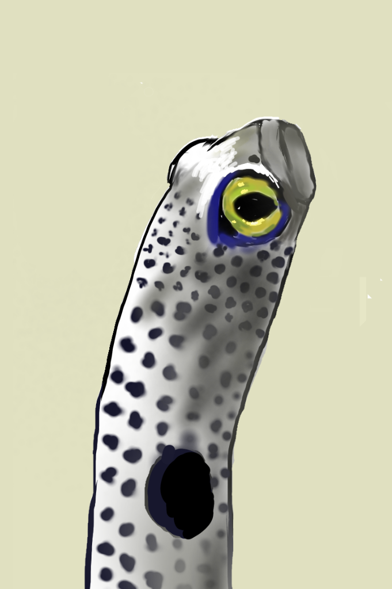

ABOUT
FINGER DRAWINGってなに？
Finger drawing は読んで字のごとく指で描いた絵のことです。
大昔に花子というソフトウェアで絵を描いていたことを思い出した私、2011年頃、iPhoneのApp Storeでお絵かきソフトを検索して出てきたアプリ Skecherをダウンロードし、iPhone4の小さな画面で指を使って絵を描き始めました。キャンバスに描く絵画ともグラフィックデザインとも違う難しさと面白さにハマりました。
細かい描写は拡大して描き込みます。色もカラーパレット上で合成、調整、スポイト機能やグラデーションも簡単にできます。
難点は小さな画面で描いているので大きく表示した際に特に線や塗りの粗さが目立つこと。また、iPhone画面の照明設定を暗くしていたので出来上がった絵を見るとやけに明るかったり蛍光色に映ったりすることです。
ただ、小さな画面に集中して対峙する時間はここちよいです。車内で没頭して周囲に怪しまれたことも多々あり。
そんなわけでギャラリーをご笑覧いただければ幸いです。
大昔に花子というソフトウェアで絵を描いていたことを思い出した私、2011年頃、iPhoneのApp Storeでお絵かきソフトを検索して出てきたアプリ Skecherをダウンロードし、iPhone4の小さな画面で指を使って絵を描き始めました。キャンバスに描く絵画ともグラフィックデザインとも違う難しさと面白さにハマりました。
細かい描写は拡大して描き込みます。色もカラーパレット上で合成、調整、スポイト機能やグラデーションも簡単にできます。
難点は小さな画面で描いているので大きく表示した際に特に線や塗りの粗さが目立つこと。また、iPhone画面の照明設定を暗くしていたので出来上がった絵を見るとやけに明るかったり蛍光色に映ったりすることです。
ただ、小さな画面に集中して対峙する時間はここちよいです。車内で没頭して周囲に怪しまれたことも多々あり。
そんなわけでギャラリーをご笑覧いただければ幸いです。
GALLERY
作品集です。2011.4-2019.8
- 
- 
- 
- 
- 
- 
- 
- 


ME
自己紹介
しんたにようこです。海と沖縄が大好きで沖縄に移住しました。
幼少期から趣味で絵を描いています。研究機関で働いていることと、最近まで科学系出版社で働いていたので、いつかジャーナルの表紙絵を描いてみたいです。よろしくお願いします。
幼少期から趣味で絵を描いています。研究機関で働いていることと、最近まで科学系出版社で働いていたので、いつかジャーナルの表紙絵を描いてみたいです。よろしくお願いします。
CONTACT
お問い合わせは、SNSかメールでお願いいたします。
aoki.yoko@gmail.com